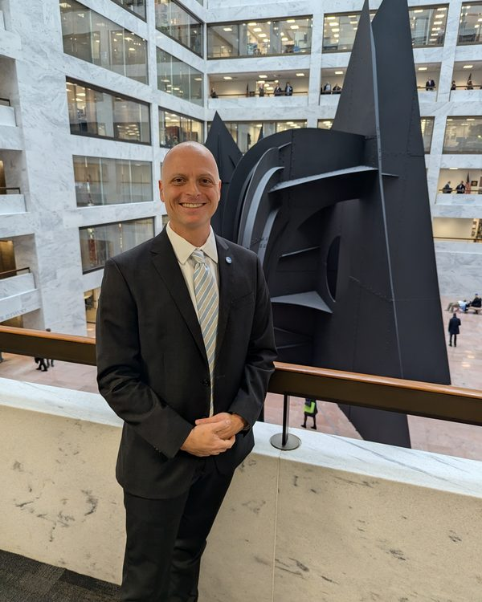

About
From Nevada, Missouri
Pronounced Knee-vay-duh, because it's a rural Missouri town.
I grew up in Nevada, Missouri. I studied economics at Truman State, then spent five years in market research and managing healthcare certification accounts, and two years as Director of Research at the Kansas City Business Journal.
The rest of my career has been at the Ewing Marion Kauffman Foundation, in two stints (2006 to 2008 and 2015 to now). My work covers entrepreneurship research, labor markets, inclusive prosperity, and the economics of AI. Along the way I earned an executive MBA from Washington University's Olin School, joined the Foundation's core AI working group, and led the Legacy Project.
Most of my work comes down to translation. Researchers and decision makers rarely speak the same language, and I connect the two so research gets used.
Agents and Agency is my independent writing. The views there are my own, not the Foundation's.

- Base
- Kansas City metro
- Role
- Senior Officer, Strategic Initiatives (Research, Learning & Evaluation), Ewing Marion Kauffman Foundation
- Education
- Executive MBA, Olin Business School, Washington University in St. Louis · BS Economics, Truman State University
- Honors
- Inaugural Alumni Fellow, Truman State University School of Social and Cultural Studies, 2022
Now
What I'm working on
AI across the work
Applied AI across entrepreneurship, workforce development, and college access and completion, plus the Foundation's core AI working group.
Agents and Agency
Essays on keeping human judgment at the center of AI. The newest is Unprompted.
The Lab
Prototypes, toy models, and three browser games, built with AI to test the ideas in the essays. Take a look.